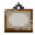

Explore Minecraft entities

This page use many images.It is not recommended for people with limited or slow internet connections to read through this page.
An Entity is an AI-driven game entity resembling a living creature. Besides its common meaning, the term "mob" is short for "mobile entity".[1] All entities can be attacked and hurt (from falling, attacked by a player or another entity, falling into the void, hit by an arrow, etc), and have some form of voluntary movement.
Different types of entities often have unique AI and drop good or bad loot depending on the entity that was killed.
List of entities
Entities are classifie by their nature from the player's perspective. You can search for one or multiples entities by their name using the search bar or simply by filling appropriate filters (type, health, armor, damage, etc..)